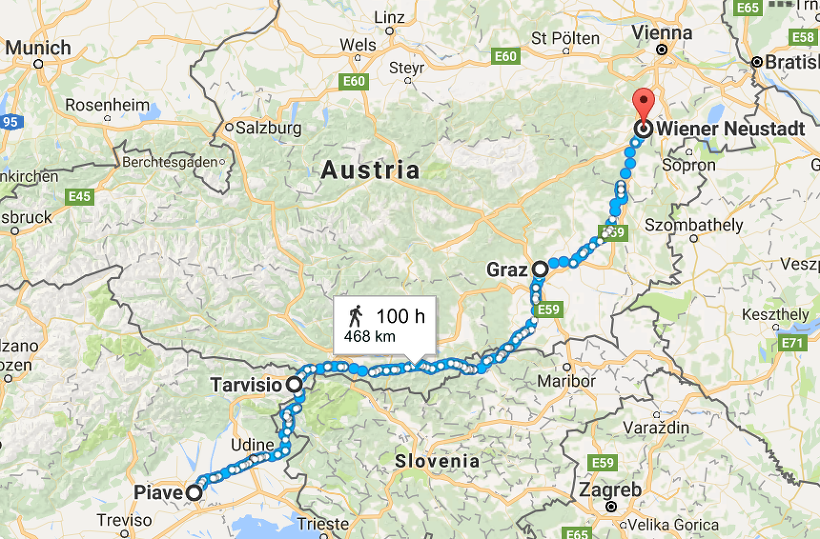

바그람(Wagram) 전투 (1편) - 양측의 준비
게시: 2017-06-06T12:58:36+09:00
피아베 전투에서 요한 대공의 오스트리아군을 격파한 외젠의 이탈리아 왕국군은 막도날드 장군의 실질적인 지휘 하에 신속하게 북상하여 오스트리아 침공에 나섰습니다. 이들의 행선지는 빈, 정확하게는 나폴레옹의 다시 한번 도나우 도강을 계획하고 있던 로바우 섬이었습니다. 이들을 가로 막는 장애물은 나름 많았습니다. 곳곳의 고개길과 도시들을 지키는 요새들이 있었거든요. 하지만 대부분의 병력이 이미 카알 대공과 요한 대공, 페르디난트 대공의 군대에 차출된 마당에 그런 요새들을 지키는 병력은 충분치 않았습니다. 가령 5월 17일 타르비스(Tarvis) 전투에서 말보르게토(Malborghetto) 요새는 방어하기 아주 좋은 고지에 위치한 튼튼한 요새였으나, 6천의 오스트리아군으로 2만의 이탈리아군을 당해낼 수는 없었습니다. 5월 30일, 그라츠(Graz) 같은 도시에서는 오스트리아군은 질 것이 뻔한 상황에서 차마 도시와 그 주민들을 희생시키지 못하고 무저항으로 도시를 넘겨주기도 했습니다. 곳곳에서 오스트리아군은 이탈리아군에게 패배했고, 외젠의 이탈리아군은 쾌속 질주를 계속했습니다.

(구글 맵에서 찾아본 피아베에서 타르비시오, 그라츠를 거쳐 노이슈타트까지 가는 길의 거리입니다. 외젠의 이탈리아 왕국군의 행군 경로도 이와 비슷했을 것입니다.)
외젠의 이탈리아군이 마침내 나폴레옹의 그랑 다르메(Grande Armee)와 합류한 것은 6월 4일, 빈 남쪽 50km 지점에 있는 노이슈타트(Neustadt)에 도착했을 때였습니다. 그라츠에서 노이슈타트까지 130km를 5일만에 주파했으니 하루에 26km씩 행군한 셈이고, 이는 당시 그랑 다르메 본진의 수준에 비해서도 결코 부끄럽지 않은 기록이었습니다. 하지만 이들은 곧장 빈과 로바우 섬으로 가지는 못했습니다. 그들이 뒤를 쫓던 요한 대공의 군대가 곧장 카알 대공 쪽으로 가지 않고 옆 걸음질을 쳐 헝가리 쪽으로 빠졌거든요. 외젠은 강행군을 했던 자신의 군대를 노이슈타트에서 2일간 휴식 시킨 뒤, 다시 그 뒤를 계속 추격해야 했습니다. 외젠은 결국 6월 14일, 노이슈타트 동쪽 약 120km 떨어진 랍(Raab, 헝가리어로는 Győr)에서 요한 대공을 따라잡고 전투를 벌여 승리를 거둡니다. 패배한 요한 대공은 더 동쪽으로 후퇴한 뒤 도나우 강을 건너 카알 대공 쪽으로 향했고, 승리한 외젠도 다시 서북쪽, 즉 로바우 섬 쪽으로 향했습니다. 이 승리로 인해 외젠은 7월 5일 벌어지는 바그람 전투에 2만3천의 병력으로 참전할 수 있었으나, 요한은 고작 1만2천의 병력을 그것도 전투가 이미 끝난 뒤에나 끌고 갈 수 있었습니다. 그렇다고 외젠이 곧장 로바우로 갔던 것은 아닙니다. 그의 군대는 여전히 랍 지역에서 요한 대공의 잔존 세력을 견제해야 했기 때문에, 랍 인근에 주둔하고 있어야 했습니다.
마침내 외젠과 막도날드가 나폴레옹의 소환 명령을 받은 것은 7월 1일이었고, 3일간의 강행군 끝에 로바우 섬을 면한 도나우 강변 카이저엔저스도르프에 도착한 것은 7월 4일 저녁 9시경이 되어서였습니다. 현장에 도착한 이들의 눈에 들어온 것은 엄청난 인원과 물자가 도강을 준비하고 있는 장면이었습니다. 그리고 항상 그렇지만, 이런 병력이 모일 때까지는 많은 이야기가 있었습니다. 이제부터 그 사정을 보도록 하겠습니다.
아스페른-에슬링 전투에서 나폴레옹의 가장 큰 패착은 도나우 강을 건널 부교를 시간에 쫓겨 너무 부실하게 구축했다는 것이었습니다. 또 하나를 뽑자면 결국 병력이 부족했다는 것이었지요. 나폴레옹은 이 두 문제에 의한 실패를 반복하지 않기 위해 정말 철저한 준비를 했습니다.
먼저, 지난번처럼 도강지점마다 다리를 한개씩 만들고 끝내지 않았습니다. 아스페른-에슬링 전투가 끝난지 약 1주일 뒤인 6월 1일부터 시작된 이 다리 건설의 책임자는 지난 번에도 다리를 지었던 공병단 지휘관 베르트랑(Henri Gatien Bertrand) 장군이었습니다. 이는 나름 중대한 의미를 가지는데, 나폴레옹이 아스페른-에슬링 패전의 책임을 최소한 공병대 측에 떠넘기지는 않았다는 뜻입니다. 나폴레옹은 아스페른-에슬링을 패전이라고 적어도 겉으로는 인정하지 않았으나, 지난 번 다리가 끊어진 책임이 기술적인 문제가 아니라 지나치게 요행을 바랐던 자신에게 있다는 것을 인정한 셈이었습니다. 다리가 끊어지고 란이 죽었을 때, 아마 모르긴 해도 베르트랑은 엄중한 책임감을 느끼고 있었을 것입니다. 그런 그에게 다시 부교 건설의 책임이 주어졌을 때 그의 심정을 생각해보십시요. 아마 스페인 세고비아(Segovia)에 아직도 남아있는 로마 수도교보다 더 튼튼한 다리를 만들겠다는 사명감에 활활 불타올랐을 것입니다. 그는 먼저 도나우 남안에서 슈나이더그룬트(Schneidergrund) 섬으로 이어지는 긴 다리를 2개 지었습니다. 거기서 다시 롭그룬트(Lobgrund) 섬으로 이어지는 다리는 3개나 지었고, 롭그룬트에서 로바우 섬으로 이어지는 짧은 다리는 훨씬 더 많이 지었습니다. 지난번 끊어졌던 가장 취약한 부분은 아무래도 가장 긴 부분인 도나우 남안에서 슈나이더그룬트 섬으로 이어지는 다리들이었는데, 이것들은 단순히 튼튼하게 짓는 것만으로는 부족했으므로, 지난번처럼 자연적으로 떠내려오거나 오스트리아군이 일부러 떠내려보낸 부목이나 보트 등에 의해 파괴되지 않도록 철저한 방비를 마련했습니다. 먼저, 이 부교들 상류 쪽에는 일련의 말뚝을 촘촘히 박아 넣어 일종의 부목 방어망을 구축했습니다. 그것만으로는 부족하다고 생각했는지 약 30척의 대형 보트에 소형 대포까지 장착하여 상류 쪽을 순찰했습니다. 무거운 보트를 떠내려 보내려는 오스트리아군을 막겠다는 의도였습니다.
베르트랑이 가장 심혈을 기울인 부분은 바로 로바우에서 도나우 북안 쪽으로 이어지는 최종 다리 부분이었습니다. 로바우 섬까지는 이미 프랑스군이 확보한 지역이었으나, 도나우 북안은 오스트리아군 장악 지역이었으므로, 도강 순간에는 적의 강력한 저항을 뚫고 신속하게 다리를 놓은 뒤 일제히 대군을 투입해야 했기 때문입니다. 게다가 이 부분도 지난 번 전투에서 한번 다리가 끊어지는 바람에 나폴레옹 본인까지도 퇴로가 막히는 아찔한 상황이 있기도 했습니다. 베르트랑은 이 부분을 위해 미리 구축된 조립식 부교를 무려 4개나 준비했습니다. 그 4개의 다리 중 하나는 이음매 없이 전체가 단 하나의 통판으로 만들어진 다리로서, 결전의 날이 되면 로바우 섬 강안에 한쪽을 고정시킨 뒤, 강물에 이 다리를 띄워 보내 90도 회전시켜 도나우 북안에 철컥 이어지도록 고안된 것이었습니다. 그야말로 강습용 다리였지요. 이런 준비는 6월 말일 경 완료되었고, 나폴레옹은 7월 2일자 대육군 회보(Bulletin de la Grande Armée)에 자랑스럽게 '프랑스군에게 도나우 강은 더 이상 존재하지 않는다'라고 발표했습니다.
다음으로는 병력 동원의 문제가 있었습니다. 나폴레옹은 이 부분에 있어서는 다리 건설과는 정 반대의 정책을 취했습니다. 즉, 시간이 훨씬 더 오래 걸리더라도 거의 돌다리 수준으로 튼튼한 다리를 만반의 준비를 갖춰 준비한 것에 비해, 병력 동원에서는 모든 위험 부담을 다 끌어 안았습니다. 병력 동원을 적게 했냐는 뜻이냐 하면 전혀 반대로서, 다른 전선이 지나치게 취약해지는 것을 개의치 않고 가능한 모든 병력을 박박 긁어모아 이번 전투에 참여시켰습니다. 그는 서쪽, 즉 본국과의 통신로 확보를 위해 후방에 배치해놓았던 병력을 모조리 소환하여 집결시켰습니다. 가령 빈 서쪽, 도나우 강 상류의 린츠(Linz)는 교통의 요지로서 프랑스군이 본국과의 통신을 유지하는 주요 후방 근거지였습니다. 여기는 아스페른-에슬링 전투 이전에도 한번 카알 대공이 병력을 보내 공격한 바 있고, 또 아스페른-에슬링 이후에도 오스트리아군이 재공격을 고려한 바 있을 정도의 요충지였지요. 이렇게 중요한 이 곳은 베르나도트(Bernadotte)의 제9 군단이 지키고 있었는데, 나폴레옹은 이 제9 군단조차 불러 들였습니다. 라구사(Ragusa) 공작으로서 현재의 크로아티아 지역을 지배하고 있던 마르몽(Marmont)에게도 1만의 병력을 끌고 올라오도록 할 정도였습니다. 외젠의 이탈리아군 이야기는 이미 들으셨지요. 그렇다고 나폴레옹이 모든 조심성을 다 버린 것은 아니었습니다. 린츠 같은 곳은 너무 중요한 곳이었으므로, 다른 곳은 몰라도 거기는 지켜야 했습니다. 이를 위해 나폴레옹은 한창 반란이 진행 중이던 티롤의 진압을 위해 투입했던 단치히 공작 르페브르(Lefebvre)의 제7 군단, 사실상 거의 전원이 독일 병사들로 이루어진 바이에른(Bayern) 군단을 린츠로 소환했습니다. 이 덕분에 티롤 반란의 수장 호퍼(Hoffer)와 티롤 반란군은 티롤의 수도 인스부르크(Innsbruck)를 재탈환하고 기세를 올렸지요. 하지만 나폴레옹은 아랑곳하지 않았습니다. 산골짝 촌놈들이 기세를 올리건 말건, 모든 상황은 바로 이 곳, 도나우 강 건너 마르히펠트(Marchfeld) 평원에서 결판이 날 것이기 때문이었습니다. 이런 식으로, 나폴레옹은 6월 중순 경까지 빈 주변에 무려 24만의 병력을 끌어모았습니다. 물론 이들을 모조리 공세에 투입할 수는 없었고, 이중 로바우 섬으로부터 도나우 강을 건너 공세에 나설 병력은 14만 보병에 2만8천의 기병, 그리고 488문의 대포였습니다. 이는 나폴레옹 평생 최대의 병력 규모였습니다.
나폴레옹의 준비는 여기서 끝나지 않았습니다. 그는 아스페른-에슬링 전투 동안, 그리고 전투가 끝난 뒤에도 탄탄한 기지가 없어서 궁지에 몰린 바가 있었지요. 그 기억을 되살려, 나폴레옹은 대-오스트리아 전선의 최전선이라고 할 수 있는 로바우 섬 전체를 철옹성으로 중무장시키기로 합니다. 6월 말경, 부교들이 준비 완료될 즈음해서는 로바우 섬에는 무려 14개소의 포대가 구축되었고 거기에는 도나우 강 북안으로 건너갈 488문의 대포 외에도 124문의 대포와 박격포가 설치되었습니다. 여기 뿐만 아니라 도나우 강 내에 있는 이런저런 작은 섬들에도 적절한 위치에 대포를 설치했습니다. 이런 중무장을 통해 최악의 경우에도 오스트리아군은 프랑스군의 진입로이자 퇴각로가 될 로바우 섬 근처에는 접근할 수 없도록 한 것이지요. 이 조치가 바그람 전투 두번째 날, 나폴레옹을 위기에서 구해내는데 결국 큰 역할을 합니다.
한편, 나폴레옹이 이런 대대적인 준비를 하는 동안 오스트리아군도 가만히 있지는 않았습니다. 오스트리아군은 로바우 섬에서 프랑스군이 물러나지 않을 뿐만 아니라, 오히려 더 적극적으로 포대를 설치하는 등 요새화 작업을 펼치는 것을 뻔히 보고 있었습니다. 이때 많은 사람들이 의아하게 생각하는 것이 왜 카알 대공이 적극적으로 프랑스군의 이 작업을 방해하지 않았는가 하는 점입니다. 도나우 강 북안에서 로바우 섬 대부분의 위치가 포 사정거리 안에 있었으므로, 일찌감치 대포를 대규모로 끌고 나와 화끈한 대포알 세례를 퍼부었다면 로바우 섬을 한폭의 지옥도로 만드는 것도 가능했습니다. 그러나 카알 대공은 그런 방해 활동을 전혀 하지 않았을 뿐만 아니라, 오히려 대부분의 병력을 도나우 강 북단에서 후방 멀찍이 후퇴시켰습니다. 로바우 섬에 면한 도나우 강 북단에도 일부 진지선을 구축하기는 했습니다만, 그건 로바우 섬의 북쪽 강안에만 그랬을 뿐이고, 넓은 로바우 섬을 면하고 있는 다른 측면 대부분은 아무 진지 구축도 하지 않고 그냥 내버려 두었습니다. 강을 건너는 적을 공격할 가장 좋은 방법은 적의 절반 정도가 강을 건넜을 때라는 점은 동서고금을 막론하고 잘 알려진 사실이고, 바로 지난번 아스페른-에슬링 전투에서도 (본의든 본의가 아니든) 나폴레옹을 그런 방법으로 패배시킨 바 있는 카알 대공의 이런 행동에 대해서는 이해불가라는 평이 대부분입니다. 카알 대공의 이런 행동에 대해서는 몇가지 이유를 추정할 수 있습니다.
먼저, 이건 추정이 아니라 팩트인데, 카알 대공은 더 이상의 전투를 원치 않았고, 이쯤에서 평화 조약을 체결해야 한다고 믿었습니다. 그러자면 나폴레옹의 체면도 적절한 선에서 살려줘야 했고, 구태어 불필요한 도발을 걸어 확전을 꾀하지 않는 것이 좋았습니다. 그러나 황제 프란츠 1세를 비롯한 합스부르크 왕정의 대부분은 철없는 주전파였고, 카알 대공의 이런 계획은 쓸데없이 나폴레옹을 도와주는 결과를 낳았을 뿐입니다.
또 카알 대공은 이번에도 나폴레옹이 반드시 로바우 섬 쪽에서 지난번처럼 도강할 것이라고 확신할 수는 없었습니다. 이쪽 방면에서 허장성세를 일으켜 오스트리아군을 집중시킨 뒤 다른 지점에서 도하는 것에도 대비는 해야 했습니다. 그러자면 강변에 참호를 파고 보루를 쌓아 고착화된 진지에 대군을 투입하는 것보다는, 더 먼 후방에서 내선 기동의 우위를 유지하며 어느 쪽에서 도강하더라도 유연하게 대처하는 것이 유리했습니다. 카알 대공이 강변에 대부대를 유지하지 않으려 한 주요 이유 중 하나는 바로 병사들의 건강 때문이었습니다. 강가는 필연적으로 습한 지역이었고, 모기가 많을 수 밖에 없었습니다. 당시 전장에서는 전투에서 총이나 대포에 의해 목숨을 잃는 병사들보다는 이질과 열병으로 죽어나가는 병사들의 수가 훨씬 많았다는 점을 감안할 때, 카알 대공의 이런 배려는 꽤 합리적인 것이었습니다. 나폴레옹도 로바우 섬의 진지 구축을 위한 병사들 외에는 대부분의 병력은 빈 인근 3일 행군 거리 내에 포진시켰을 뿐, 강변에 대군을 몇 주씩 주둔시키지는 않았거든요.
대신 카알 대공이 힘을 기울인 것은 병력 집결이었습니다. 그는 오스트리아-헝가리 제국 내에서 가장 부유하고 공업화된 지역인 보헤미아(체코) 지역을 지키고 있던 콜로브라트(Kolowrat) 장군의 제3 군단을 소환하고, 제국 내 각 지역 방어를 맡고 있던 국민방위군(Landwehr, 일종의 예비군 내지는 민병대)까지 휘하로 소집했습니다. 이건 사실 오스트리아 제국이 젖먹던 힘까지 짜낸 것이라고 할 수 있었습니다. 국민방위군은 원래 30~50대의 중산층 시민들을 비상근 형태로 훈련시키고 조직시킨 뒤 어디까지나 거주 지역의 수비대로 활용하기 위해 조직된 것으로서, 이들에게 대포알이 쏟아지는 전장에서 횡대-종대의 복잡한 대열 변경이나 하루 30km의 강행군을 기대할 수는 없었습니다. 원래 아스페른-에슬링 전투 당시 카알 대공의 병력은 약 9만이었는데, 이중 2만 정도가 전사-부상-포로 및 행방불명으로 상실되었으므로 7만이 남아 있었습니다. 여기에 제3군단 약 1만8천과 국민방위군 등을 끌어모아 약 13만7천, 414문의 대포를 집결시킬 수 있었습니다.
아쉬웠던 것은 이럴 때 두 동생이 거느린 5만의 병력이었습니다. 개전 초기 바르샤바 공국을 침공했던 페르디난트 대공은 뜻하지 않게 완강히 저항하는 폴란드인들 때문에 별 전과를 올리지 못 하고 폴란드에서 밀려나 오스트리아령 갈리시아(Galicia)에 주둔하고 있었습니다. 아직 3만 정도의 병력을 가지고 있던 페르디난트 대공이 마르히펠트에 나타난다면 정말 큰 도움이 되었을 것입니다. 그러나 폴란드라는 벌집을 잘못 건드린 탓에, 바르샤바 공국의 포니아토프스키 왕자가 이끄는 폴란드군이 오히려 오스트리아 국경을 침범한 상황이었고, 게다가 별로 적극적인 공격성을 띄지는 않았지만 어쨌거나 나폴레옹의 동맹국인 러시아군이 갈리시아 국경 인근에 대기 중이었으므로, 페르디난트 대공은 이 곳을 텅 비워두고 마르히펠트로 내려올 수는 없었습니다.
더 아쉬운 것은 요한 대공의 오스트리아 내부군(Inner army of Austria)였습니다. 외젠의 이탈리아 왕국을 침공했던 이 군대는 원래부터도 규모가 크지는 않았는데, 피아베 전투에서 패배한 뒤 군세가 더 축소되었고, 결정적으로 요한 대공이 뭔 생각에서였는지 이 군대를 구성하는 2개 군단 중 하나를 그 군단의 본거지인 류블랴나(오늘날의 슬로베니아)로 되돌려 보내는 바람에 2만 정도로 크게 축소된 상태로 헝가리로 되돌아온 상황이었습니다. 나폴레옹이 저 먼 아드리아 해의 달마시아(Dalmatia)의 마르몽에게도 '1만명이라도 좋으니 다 끌고 올라오라'고 명령할 정도로 온갖 병력을 박박 긁어모으고 있는 것에 비해, 오스트리아는 결코 여유를 부릴 형편이 아니었습니다. 요한 대공이 류블랴나를 지킬 병력이랍시고 군단 하나를 그쪽으로 떼놓고 온 것은 정말 아쉬운 행동이었습니다. 어차피 류블랴나를 위협할 프랑스군은 외젠의 이탈리아군과 마르몽의 달마시아군이었는데, 그들은 모든 것을 버려두고 나폴레옹에게 달려가고 있었으니 더욱 그랬습니다. 그나마 요한 대공의 잔존 2만 병력이라도 무척 요긴하게 사용할 수 있었으나, 요한 대공은 결국 형을 실망시키게 됩니다. 외젠이 끌고 온 이탈리아군이 바그람에서 막도날드의 지휘 하에 결정적인 역할을 수행한 것을 생각하면 더더욱 아쉬운 일이었습니다.
Source : With Napoleon's Guns by Colonel Jean-Nicolas-Auguste Noel
The Life of Napoleon Bonaparte, by William Milligan Sloane
http://www.historyofwar.org/articles/battles_wagram.html
http://www.napolun.com/mirror/napoleonistyka.atspace.com/Battle_of_Wagram_1809.htm
https://en.wikipedia.org/wiki/Battle_of_Wagram
https://en.wikipedia.org/wiki/Wagram_order_of_battle